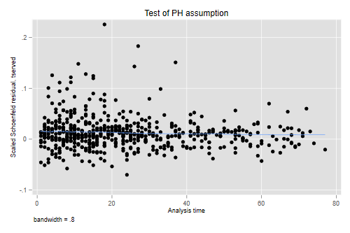

<h2 id="cox-proportional-hazards-regression">Cox Proportional Hazards
Regression</h2>
<p>We return to the recidivism data that we analyzed using parametric
models. Let us start by reading the data and setting them up for
survival analysis</p>

{% include srtabs.html %}

<pre class='stata'>. use https://www.stata.com/data/jwooldridge/eacsap/recid, clear

. gen fail = 1 - cens

. stset durat, failure(fail)

Survival-time data settings

         Failure event: fail!=0 &amp; fail&lt;.
Observed time interval: (0, durat]
     Exit on or before: failure

──────────────────────────────────────────────────────────────────────────
      1,445  total observations
          0  exclusions
──────────────────────────────────────────────────────────────────────────
      1,445  observations remaining, representing
        552  failures in single-record/single-failure data
     80,013  total analysis time at risk and under observation
                                                At risk from t =         0
                                     Earliest observed entry t =         0
                                          Last observed exit t =        81
</pre>
<pre class='r'>> library(haven)
> recid &lt;- read_dta("https://www.stata.com/data/jwooldridge/eacsap/recid.dta")
> recid$fail = 1 - recid$cens
</pre>
<h3 id="a-proportional-hazards-model">A Proportional Hazards Model</h3>
<p>We fit a proportional hazards model using the efron method for
handling ties:</p>
<pre class='stata'>. local model workprg priors tserved felon drugs black married educ age

. stcox `model', efron

        Failure _d: fail
  Analysis time _t: durat

Iteration 0:   log likelihood = -3891.7741
Iteration 1:   log likelihood = -3841.8477
Iteration 2:   log likelihood = -3822.6663
Iteration 3:   log likelihood = -3820.9451
Iteration 4:   log likelihood = -3820.9142
Iteration 5:   log likelihood = -3820.9142
Refining estimates:
Iteration 0:   log likelihood = -3820.9142

Cox regression with Efron method for ties

No. of subjects =  1,445                                Number of obs =  1,445
No. of failures =    552
Time at risk    = 80,013
                                                        LR chi2(9)    = 141.72
Log likelihood = -3820.9142                             Prob > chi2   = 0.0000

─────────────┬────────────────────────────────────────────────────────────────
          _t │ Haz. ratio   Std. err.      z    P>|z|     [95% conf. interval]
─────────────┼────────────────────────────────────────────────────────────────
     workprg │   1.054341   .0952997     0.59   0.558     .8831665    1.258691
      priors │   1.100222    .014745     7.13   0.000     1.071699    1.129505
     tserved │   1.012483   .0016826     7.47   0.000     1.009191    1.015786
       felon │   .7361351    .077207    -2.92   0.003     .5993523     .904134
       drugs │    1.30457   .1278366     2.71   0.007     1.076607    1.580803
       black │   1.485848   .1301791     4.52   0.000     1.251406     1.76421
     married │   .8741874   .0953226    -1.23   0.218     .7059735    1.082482
        educ │   .9804111   .0190581    -1.02   0.309     .9437606    1.018485
         age │   .9966611   .0005162    -6.46   0.000     .9956499    .9976733
─────────────┴────────────────────────────────────────────────────────────────

. estimates store efron // for later comparisons
</pre>
<pre class='r'>> library(survival)
> mf &lt;- Surv(durat, fail) ~ 
+   workprg + priors + tserved + felon + drugs + black + married + educ + age
> cm &lt;- coxph(mf, data = recid)
> cm
Call:
coxph(formula = mf, data = recid)

              coef  exp(coef)   se(coef)      z        p
workprg  0.0529156  1.0543406  0.0903879  0.585  0.55826
priors   0.0955123  1.1002224  0.0134018  7.127 1.03e-12
tserved  0.0124059  1.0124832  0.0016618  7.465 8.32e-14
felon   -0.3063417  0.7361351  0.1048815 -2.921  0.00349
drugs    0.2658736  1.3045701  0.0979914  2.713  0.00666
black    0.3959855  1.4858477  0.0876127  4.520 6.19e-06
married -0.1344605  0.8741874  0.1090414 -1.233  0.21753
educ    -0.0197833  0.9804111  0.0194389 -1.018  0.30881
age     -0.0033445  0.9966611  0.0005179 -6.458 1.06e-10

Likelihood ratio test=141.7  on 9 df, p=&lt; 2.2e-16
n= 1445, number of events= 552 
</pre>
<p>The estimated coefficients are similar to those obtained using a
Weibull model. Here’s a side by side comparison. <span class="r">Recall
that R uses the AFT metric, so we need to convert to PH to
compare.</span></p>
<pre class='stata'>. quietly streg `model', distribution(weibull)

. estimates store weibull

. estimates table efron weibull, equation(1:1) // match equations

─────────────┬──────────────────────────
    Variable │   efron       weibull    
─────────────┼──────────────────────────
#1           │
     workprg │  .05291557    .05775252  
      priors │   .0955123    .09672029  
     tserved │  .01240588    .01285382  
       felon │ -.30634168    -.3201125  
       drugs │  .26587357    .27186642  
       black │  .39598547    .41429122  
     married │ -.13446046   -.12972325  
        educ │ -.01978331   -.02192692  
         age │  -.0033445   -.00345801  
       _cons │              -3.3512677  
─────────────┼──────────────────────────
       /ln_p │              -.22080169  
─────────────┴──────────────────────────
</pre>
<pre class='r'>> wm &lt;- survreg(mf, dist = "weibull", data = recid)
> cbind( coef(cm), -coef(wm)[-1]/wm$scale ) 
                [,1]         [,2]
workprg  0.052915570  0.057752517
priors   0.095512305  0.096720295
tserved  0.012405884  0.012853823
felon   -0.306341680 -0.320112498
drugs    0.265873573  0.271866422
black    0.395985470  0.414291221
married -0.134460460 -0.129723255
educ    -0.019783310 -0.021926923
age     -0.003344497 -0.003458007
</pre>
<p>For example the Cox coefficient for blacks indicates that African
Americans face a 48.6% higher risk of recidivism at any duration since
release from prison than non-blacks with the same observed
characteristics. The Weibull analysis yielded an estimate of 51.3%
higher hazard.</p>
<h3 id="the-treatment-of-ties">The Treatment of Ties</h3>
<p>Let us compare all available methods of handling ties. If you run
this code expect the exact calculation to take substantially longer than
the others.</p>
<pre class='stata'>. quietly stcox `model', breslow // default

. estimates store breslow

. quietly stcox `model', exactm

. estimates store exactm

. quietly stcox `model', exactp

. estimates store exactp

. estimates table breslow efron exactm exactp

─────────────┬────────────────────────────────────────────────────
    Variable │  breslow       efron        exactm       exactp    
─────────────┼────────────────────────────────────────────────────
     workprg │  .05284355    .05291557    .05291409    .05315276  
      priors │  .09503255     .0955123    .09551509    .09645497  
     tserved │  .01229776    .01240588    .01240713    .01254959  
       felon │ -.30525144   -.30634168    -.3063558   -.30993357  
       drugs │  .26393017    .26587357    .26588358    .26686928  
       black │  .39366079    .39598547    .39600249      .398402  
     married │ -.13422414   -.13446046   -.13446367   -.13577505  
        educ │ -.01971757   -.01978331   -.01978529   -.02012032  
         age │  -.0033222    -.0033445   -.00334456   -.00335309  
─────────────┴────────────────────────────────────────────────────
</pre>
<pre class='r'>> cm_b &lt;- coxph(mf, data=recid, ties="breslow")
> cm_e &lt;- coxph(mf, data=recid, ties="exact")
> data.frame(breslow = coef(cm_b), efron = coef(cm), exactp = coef(cm_e))
             breslow        efron       exactp
workprg  0.052843554  0.052915570  0.053152759
priors   0.095032546  0.095512305  0.096454966
tserved  0.012297764  0.012405884  0.012549587
felon   -0.305251441 -0.306341680 -0.309933573
drugs    0.263930169  0.265873573  0.266869280
black    0.393660789  0.395985470  0.398402001
married -0.134224141 -0.134460460 -0.135775053
educ    -0.019717572 -0.019783310 -0.020120315
age     -0.003322199 -0.003344497 -0.003353089
</pre>
<p>As is often the case, the Efron method comes closer to the exact
partial likelihood estimate with substantially less computational
effort, although in this application all methods yield very similar
results.</p>
<h3 id="baseline-hazard">Baseline Hazard</h3>
<p>After fitting a Cox model we can obtain estimates of the baseline
survival or cumulative hazard using extensions of the Kaplan-Meier and
Nelson-Aalen estimators.</p>
<p>Estimates of the hazard itself, which may be obtained by differencing
the estimated cumulative hazard or negative the estimated survival, are
usually too “spiky” to be useful, but can be smoothed to glean the
general shape.</p>
<div class="stata">
<p>Stata makes these calculations extremely easy via the
<code>stcurve</code> command. By default the command computes the
baseline hazard or survival setting all covariates to their means, not
zero. You can request other values via the options
<code>at(varname=value)</code>. Below I plot the hazards for blacks and
others with all other variables set to their means. To make sure you
understand exactly what Stata is doing under the hood I also do this “by
hand”.</p>
</div>
<div class="r">
<p>In R we can obtain the survival via <code>survfit()</code>, which
accepts a Cox model as argument. You are encouraged to always call this
function with a new data frame that specifies exactly what you want to
calculate. The default is the mean of all covariates used in the Cox
fit. Below I calculate the means explicitly and construct a data frame
with two rows, representing blacks and others with all other variables
set to their means. I then compute the survival, and difference the
negative log to obtain the hazard.</p>
</div>
<pre class='stata'>. stcurve, at(black=1) at(black=0) hazard

. // by hand:
. preserve

. quietly sum black

. scalar mb = r(mean)

. predict H, basech       

. keep if fail
(893 observations deleted)

. bysort _t: keep if _n == 1
(478 observations deleted)

. gen h= H[_n + 1] - H
(1 missing value generated)

. gen rr0 = exp((1 - mb) * _b[black])

. gen rr1 = exp( - mb    * _b[black])

. gen h0 = h * rr0
(1 missing value generated)

. gen h1 = h * rr1
(1 missing value generated)

. line h0 h1 _t, col(red blue) legend(off)

. lowess h0 _t, gen(s0) bw(0.5) nograph

. lowess h1 _t, gen(s1) bw(0.5) nograph

. line h0 h1 s0 s1 _t, col(red blue red blue) legend(off) aspect(1)

. restore

. graph export recidhaz.png, width(500) replace 
file recidhaz.png saved as PNG format
</pre>
<pre class='r'>> library(dplyr)
> library(ggplot2)
> means &lt;- summarize_each(recid, funs(mean))
> nd &lt;- rbind(means, means) %>% mutate(black = 0:1)
> sf &lt;- survfit(cm, newdata = nd) # type will match estimate
> nr &lt;- length(sf$time)
> ndh &lt;- data.frame( 
+   ethn = factor(rep(c("black","other"), rep(nr - 1, 2))),
+   time = (sf$time[-1] + sf$time[-nr])/2,
+   hazard = c(diff(-log(sf$surv[,2])), diff(-log(sf$surv[,1])))
+ )
> ggplot(ndh, aes(time, hazard, color = ethn)) + geom_line() + 
+     geom_smooth(span = 0.5, se = FALSE)
> ggsave("recidhazr.png", width = 500/72, height = 400/72, dpi = 72)
</pre>
<p>
</p>
<p>The estimates suggests that the hazard raises a bit in the first few
weeks after release and then declines with duration. This result is
consistent with the observation that a log-normal model fits better than
a Weibull.</p>
<h3 id="schoenfeld-residuals">Schoenfeld Residuals</h3>
<p>We now check the proportional hazards assumption using scaled
Schoenfeld residuals. Recall that our software uses different defaults
so results will differ. Stata computes the test using the original time
scale. R computes it using the overall survival function as the time
scale. <span class="r">We specify <code>transform = "identity"</code> to
obtain exactly the same results.</span></p>
<pre class='stata'>. estimates restore efron 
(results efron are active now)

. estat phtest, detail

Test of proportional-hazards assumption

Time function: Analysis time
─────────────┬──────────────────────────────────────────
             │        rho     chi2       df    Prob>chi2
─────────────┼──────────────────────────────────────────
     workprg │    0.04790     1.27        1       0.2595
      priors │   -0.08288     3.06        1       0.0802
     tserved │   -0.09808     3.59        1       0.0580
       felon │    0.00891     0.04        1       0.8423
       drugs │   -0.00486     0.01        1       0.9090
       black │    0.04834     1.27        1       0.2591
     married │    0.04923     1.38        1       0.2399
        educ │   -0.06091     1.83        1       0.1766
         age │    0.04229     1.31        1       0.2531
─────────────┼──────────────────────────────────────────
 Global test │               12.76        9       0.1740
─────────────┴──────────────────────────────────────────
</pre>
<pre class='r'>> zph &lt;- cox.zph(cm, transform = "identity"); zph
           chisq df     p
workprg  1.26387  1 0.261
priors   1.28885  1 0.256
tserved  2.96405  1 0.085
felon    0.23298  1 0.629
drugs    0.00763  1 0.930
black    0.82568  1 0.364
married  2.97696  1 0.084
educ     0.81276  1 0.367
age      0.41025  1 0.522
GLOBAL  12.67933  9 0.178
</pre>
<p>The overall chi-squared statistic of 12.76 on 9 d.f. indicates no
significant departure from the proportional hazards assumption. The only
variable that might deserve further scrutiny is time served, which has
the largest chi-squared statistic, although it doesn’t reach the
conventional five percent level. Just out of curiosity we can plot the
scaled Schoenfeld residuals against time. To do this <span
class="stata">we use the <code>plot(varname)</code> option of
<code>stphtest</code>.</span><span class="r">we use the generic
<code>plot()</code> function, called via <code>ggfy()</code> to make the
plot look a bit like <code>ggplot</code>, with the object
<code>zph[3]</code> that includes the index of the variable of
interest.</span></p>
<pre class='stata'>. stphtest, plot(tserved)

. graph export recidpht.png, width(500) replace
file recidpht.png saved as PNG format
</pre>
<pre class='r'>> source("ggfy.R.txt")
> png(file="recidphtr.png", width=500, height=400)
> ggfy(zph[3]) # or call plot(zph[3]) directly
> dev.off()
pdf 
  2 
</pre>
<p>
</p>
<p>We see no evidence of a trend in the effect of time served, so we
have no evidence against the proportionality assumption.</p>
<p>More detailed exploration of this issue can be pursued by introducing
interactions with duration, as we demonstrated using <a href="cox">Cox’s
example</a>.</p>
